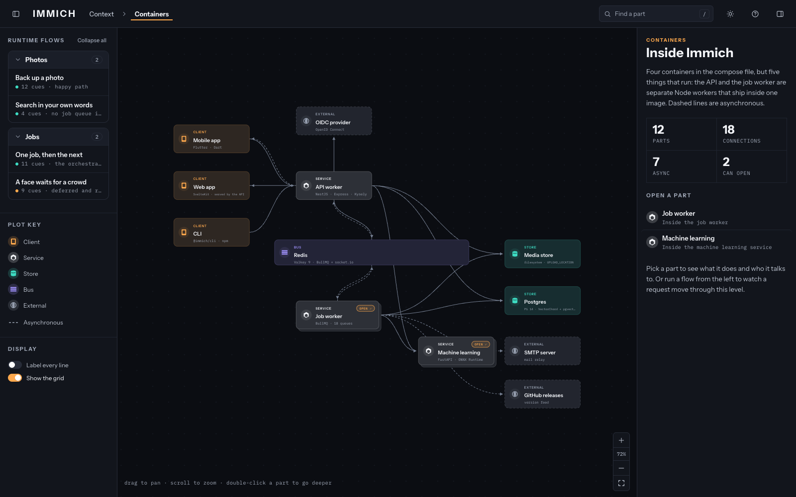

A skill for Claude Code
It reads a codebase and writes a single HTML file you can drill into — context, containers, components, code. What follows are diagrams it produced, hosted here so you can walk through one before installing anything.
The example

Self‑hosted photo and video backup. Pick a flow from the left rail and watch an upload move from the phone, through the queue, to a searchable embedding.
Open the diagram →Details
Point it at a repository and read what comes back.